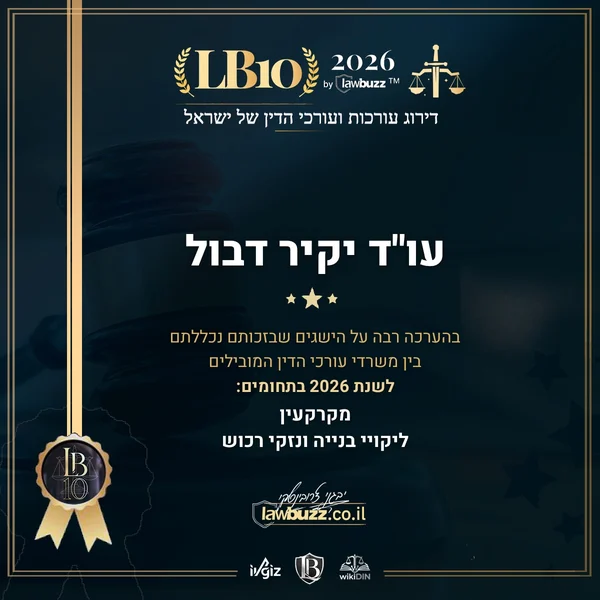

דירוג LB10 · לובאז 2026נבחרתי לדירוג LB10 2026 של משרדי עורכי הדין המובילים בישראלבדירוג עורכות ועורכי הדין של ישראל לשנת 2026, שמפרסם אתר המשפט לובאז, נכלל המשרד בין משרדי עורכי הדין המובילים בתחומי המקרקעין וליקויי הבנייה ונזקי הרכוש.
על הדירוג והתעודה ←תעודת ההוקרה של לובאז לעו״ד יקיר דבול, על הכללתו בדירוג לשנת 2026 בתחומי מקרקעין וליקויי בנייה ונזקי רכוש. לחיצה על התעודה פותחת אותה בגודל מלא.
לעמוד הדירוג ←